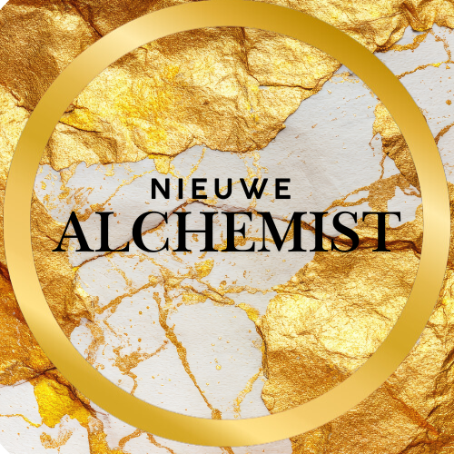

Chakra Code Profiel
Een uitgebreid, symbolisch rapport op basis van je geboortedatum: chakra-profiel, zielscyclus, karmische lijnen, gids-symboliek, jaarthema en zielsmissie.
Deze tool werkt volledig in je browser. Er worden geen gegevens opgeslagen of verstuurd. De duiding is symbolisch en bedoeld als reflectie – niets ligt vast.